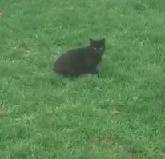

The Cats of Coeur d'Alene
While staying at the Mill House you may notice that there are a few furry friends that are lurking about. When I moved into my house a local mother cat had recently given birth. After a few unsuccessful attempts to have them rescued by animal services, I had to take matters into my own hands. I captured the cat and took them to the vet where they received their vaccinations and were all spayed/neutered. At the advising of a vet I re-released the cats afterward and since then they have decided to call my house thier home. Below is a list and some pictures of some of the cats that can be spotted while you stay at the Mill House. If you do happen to spot a cat, I ask that you admire from a distance for the saftey of you and the cat.
-

Charcoal aka Mother
Charcoal is a black cat who initially showed up on the property a few years ago. She has short black hair and can be commonly seen haning around the roof of the Mill House.
-
Liso
Liso is a slim grey cat who is often adventerous and is willing to approach people. He is the leader of the pack and will often play in plain view. If you find yourself out on the lounge chair, do not be suprised if he approaches to say hello.
-
Smokee
Smokee or Shmokes as we like to call him is a fluffy grey cat with a bent tail that adds some character. Schmokes is a bit timid and will often run away when confronted so if you do happen to see Schmokes, he is best admired from afar lest you scare him away and not have a chance to bask in the fluffiness.
-
Bart
Bart looks like Smokee if he got dipped in a drum full of black paint. Bart is the most adventerous of all of the cats and can often be spotted a few streets away haning out in other front yards and catching some rays on a sunny day. Bart is not easily intimidated and may come to greet you at your front door (and may try to enter too)
-
Daughter
Daughter is commonly refered to as Mother/Daughter because from a distance it is hard to tell the two apart. Her behavior is also similar to her mother making it tough to write anything more.